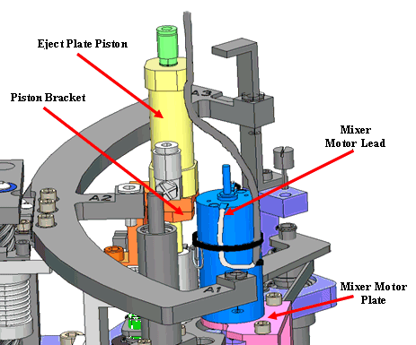
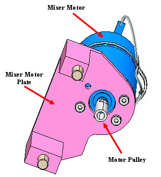
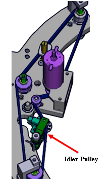

Replacing Mixer Motor
This procedure describes how to replace the mixer motor when the mixer motor current is greater than 1.25 V DC and no restrictions to the mixer belt rotation are found, when the mixer motor is damaged or defective or has defective component, when the mixer motor has a mixer drive circuit failure indicated by shorted or open wiring or excessive mixer motor resistance.
- current is greater than 1.25 V DC and no restrictions to the mixer belt rotation are found.
- is damaged or defective or has a defective component, such as wiring or bearings.
- has a mixer drive circuit failure, which is indicated by shorted or open wiring or excessive mixer motor resistance.

-
Shut down the DxI instrument.
- Select Configure > PC Admin > System Admin > Shutdown Instrument to exit the software in preparation for powering off the instrument.
- Enter the password Access2Support, and then select OK.
- At the pop-up You must now turn off the instrument, using the instrument power switch, select OK.
- After the instrument software has shut down, turn off the instrument at the power switch.
-
Remove the probes and disconnect the motor.
-
Remove dispense probe 1 and dispense probe2 from the dispense probe plate, and place them to the side.
Note: The probe tubing does not need to be disconnected from the connection panel.
-
Remove aspirate probe 1 and aspirate probe 2 from the aspirate probe plate, and place them to the side.
Note: The probe tubing does not need to be disconnected from the connection panel.
-
Disconnect the mixer motor power connection, J2, from the upper analytical module interface PCB. Cut and discard the tie-wraps.
Note: The analytical module interface PCB is mounted on the left exterior wall of the upper right card cage. This connection is found on the center right side of the upper analytical module Interface PCB. When removing the tie-wraps, do not cut any wires.
- Cut and discard the tie wraps from the mixer motor and eject plate piston.
-
Remove dispense probe 1 and dispense probe2 from the dispense probe plate, and place them to the side.
-
Remove the mixer motor.
Note: The mixer motor does not come with the pulley. The pulley must be ordered separately, if a replacement is needed. In the DxI instrument parts list, search for pulley, mixer motor and then select Module-Wash Assembly.-
Observe the belt routing and the idler pulley position, then remove the mixer motor and motor plate (two 9/64-inch hex screws). This releases belt tension from the pulley.
Note: The mixer belt does not need to be removed entirely.
- Remove the mixer motor pulley from the motor shaft (two set screws).
- Remove the mixer motor from the mixer motor mounting plate (three 1.5-mm metric screws).
-
Observe the belt routing and the idler pulley position, then remove the mixer motor and motor plate (two 9/64-inch hex screws). This releases belt tension from the pulley.
-
Assemble the mixer motor.
-
Attach the mixer motor to the mounting plate (three screws).
Note: To prevent the leads on the mixer motor from being pinched, ensure that the leads are oriented parallel to the eject plate piston.
-
Attach the pulley to the motor shaft.
- Apply Loctite 222 to the set screws on the motor pulley, and thread the screws into the pulley.
- Align the set screws with the two flat slots located on the end of the motor shaft.
- Tighten one set screw until it lightly contacts the flat surface of the mixer motor shaft.
- Push the pulley down on the shaft towards the motor until the set screw stops at the top of the flat slot of the mixer motor shaft
- Tighten both set screws securely.

-
Attach the mixer motor to the mounting plate (three screws).
-
Install the mixer motor assembly.
-
Place the assembly in position, and then route the mixer belt around the mixer motor pulley.
Note:
- Be sure the mixer belt goes around the guide between the mixer motor and the tensioner.
- Refer to the AU: Replacing Mixer Belt procedure.
- Install the mixer motor and mounting plate to the dispense probe plate (two screws).
-
With the belt routed and positioned on all the pulleys, roll the belt on the pulleys to ensure that it rotates properly.
Note: At this point, the idler pulley can be misaligned. Ensure that the idler pulley is facing the correct way.

-
Place the assembly in position, and then route the mixer belt around the mixer motor pulley.
-
Connect the motor and install the probes.
- Route and connect the mixer motor power connection, J2, to the upper analytical module interface PCB. and Install new tie-wraps around the wire harnesses, mixer motor, and eject plate piston.
- Install the aspirate and dispense probes.
- Manually move the dispense and aspirate plates fully up and down to verify that the wire and tubing routings have sufficient slack and do not snag or pull on the probes or probe connection panel.
- Power up the instrument.
- Initialize the system.
-
Confirm mixer speed is correct.
- In the user interface, select Diagnostics > Subsystem Diagnostics > RV Mixer.
- Confirm that the mixer speed is 2200 ±770 rpm.
-
If the mixer speed is not 2200 ±770 rpm, then:
- Run 10 Test Cycles of the RV Mixer.
- Initialize the instrument (to recalibrate the mixer system).
- In the user interface, select Diagnostics > Subsystem Diagnostics > RV Mixer.
- Confirm that the mixer speed is 2200 ±770 rpm.
-
Run the vessel exerciser to verify mixer belt operation.
- From the Device Diagnostics screen, select Exerciser.
-
Run
- 25 Reps of Reaction Route 1
- 25 Reps of Reaction Route 2
- Mixer enabled
- Select Cycle Vessels.
-
Observe the system and verify that:
- the exerciser does not fail.
- the mixer belt is functioning properly.
-
From the Main Menu select
Diagnostics > Initialize
> Clear all Positions.
This will initialize the system and remove all the vessels selected.
-
Verify system operation.
-
Perform system verification as stated in the Verification of Service Repair document .
Refer to the Admin: Verification of Service Repair document.
-
Perform system verification as stated in the Verification of Service Repair document .